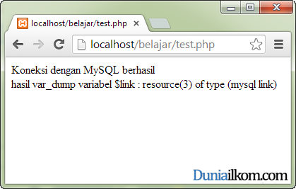
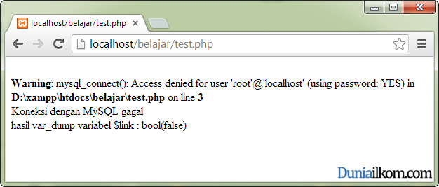
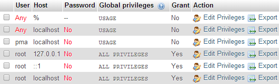

Tutorial PHP MySQL Part 4: Cara Membuat Koneksi PHP dengan MySQL (mysql_connect)
Didalam tutorial kali ini kita akan mulai masuk dengan kode program untuk membuat koneksi antara PHP dengan MySQL. Seperti yang pernah kita bahas, PHP menyediakan 3 buah extension untuk koneksi PHP-MySQL. Mulai dari tutorial ini dan beberapa tutorial kedepan, saya akan membahas cara koneksi menggunakan mysql extension. Kali ini kita akan membahas cara membuat koneksi antara PHP dengan database MySQL. Proses koneksi ini menggunakan fungsi mysql_connect().
Untuk penulisan program, saya tidak menyarankan mysql extension, tetapi sebaiknya menggunakan mysqli extension dan PDO. Tutorial mengenai mysqli dan PDO akan kita bahas mulai dari tutorial PHP MySQL part 12 keatas.
Mengenal Fungsi koneksi PHP-MySQL: mysql_connect()
Untuk membuat koneksi antara PHP dengan MySQL menggunakan mysql extension, PHP menyediakan fungsi mysql_connect().
Fungsi ini diibaratkan sebagai cara untuk login kedalam MySQL Server. Fungsi mysql_connect() membutuhkan 3 argumen, dan mengembalikan nilai fungsi berupa ‘variabel koneksi’ ke MySQL.
Berikut adalah format dasar penulisan fungsi mysql_connect():
$link = mysql_connect(’mysql_host’, 'mysql_user', 'mysql_password'); |
- $link merupakan variabel yang akan menampung hasil dari fungsi mysql_connect (). Jika berhasil terhubung dengan MySQL, $link akan berisi nilai yang berfungsi sebagai ’link koneksi’ dengan MySQL. Link koneksi ini akan dibutuhkan sepanjang program PHP-MySQL nantinya. Di dalam PHP, variabel $link ini dikenal dengan istilah handler, yakni variabel yang meng-handle koneksi ke MySQL.
- mysql_host adalah argumen pertama dari fungsi mysql_connect(). Nilai mysql_host diisi dengan alamat komputer dimana MySQL Server berjalan. Jika anda menjalankan MySQL menggunakan XAMPP di komputer yang sama dengan tempat web server Apache berjalan, maka alamat ini bisa diisi dengan ’localhost’ atau ’127.0.0.1’. Namun jika MySQL server dijalankan dari komputer lain, argumen ini akan berisi IP address dari komputer tersebut.
- mysql_user adalah nama user MySQL dimana kita akan login. Seperti ’root’, ’admin’, ’andi’ dan lain-lain tergantung kepada user MySQL yang telah terdaftar di server. Cara membuat dan menghapus user MySQL telah saya bahas pada Tutorial Cara Membuat dan Menghapus User MySQL (CREATE USER). Jika anda menggunakan MySQL bawaan XAMPP, user ’root’ dapat digunakan.
- mysql_password diisi dengan password dari user yang dibuat pada argumen mysql_user.
Variabel $link yang berisi link koneksi PHP-MySQL (hasil dari fungsi mysql_connect()), termasuk ke dalam kelompok tipe data khusus PHP yang disebut resources. Variabel Resources tidak bisa berdiri sendiri dan biasanya digunakan sebagai argumen untuk fungsi lain. Anda bebas mengganti nama variabel $link dengan nama lain, seperti $koneksi, $link_mysql, dll.
Jika koneksi dengan PHP gagal dilakukan, fungsi mysql_connect() akan mengembalikan nilai Boolean FALSE. Hasil FALSE ini akan disimpan dalam variabel $link dan bisa kita gunakan dalam perulangan IF untuk menampilkan error yang terjadi.
Cara Membuat Koneksi PHP dengan MySQL
Untuk mengetahui cara membuat koneksi antara MySQL dengan PHP, langsung saja kita masuk kedalam contoh kode program cara penggunaan fungsi mysql_connect().
Berikut adalah kode PHP untuk membuat koneksi dengan MySQL:
1
2
3
4
5
6
7
8
9
10
11
12
13
14
15
16
17
18
19
20
21 |
<?php//buat koneksi MySQL untuk user: root, tanpa password, alamat: localhost$link=mysql_connect('localhost','root','');//cek apakah koneksi dengan MySQL berhasilif ($link) { //koneksi berhasil echo "Koneksi dengan MySQL berhasil"; }else { //koneksi gagal echo "Koneksi dengan MySQL gagal"; }//memeriksa nilai dari $linkecho "<br />";echo 'hasil var_dump variabel $link : ';var_dump($link);?> |
Jika koneksi dengan MySQL berhasil, maka di dalam web browser akan tampil gambar seperti berikut ini:

Pada bagian pertama kode program, saya membuat fungsi mysql_connect(‘localhost’,’root’,”). Fungsi ini berarti saya mencoba login dengan MySQL Server yang berada di alamat localhost (komputer yang sama dengan web server berada), nama user ’root’ dan password ’’ (string kosong, yang berarti tanpa password).
Fungsi mysql_connect() mengembalikan kondisi status koneksi ke dalam variabel $link. Variabel $link akan berisi link koneksi (bertipe resources) jika berhasil terkoneksi dengan MySQL, dan akan bernilai TRUE jika dikonversi menjadi Boolean.
Namun variabel $link akan berisi nilai Boolean FALSE jika PHP gagal login ke MySQL. Nilai $link ini selanjutnya bisa digunakan untuk pengecekan apakah koneksi berhasil atau tidak.
Jika terjadi kesalahan, misalkan saja saya mengubah password root menjadi ’123456’, maka tampilan web browser akan seperti berikut ini:

Seperti yang terlihat, PHP mengeluarkan pesan error mysql_connect(): Access denied for user ‘root’@’localhost’ (using password: YES), yang berarti login ke MySQL gagal karena salah password untuk user root.
Agar lebih informatif, diakhir program saya tampilkan nilai dari variabel $link dengan menggunakan fungsi var_dump(). Anda akan melihat bahwa variabel $link bertipe data ’resources’ jika koneksi berhasil, dan bertipe data Boolean FALSE, jika koneksi gagal.

Selain user root, MySQL bawaan XAMPP juga berisi beberapa user lain. Berikut adalah daftar user tersebut:

Hal yang penting dari tabel diatas, MySQL membolehkan user dengan nama: ANY, yang berarti MySQL bawaan XAMPP membolehkan user dengan nama apapun untuk masuk ke MySQL Server, sehingga jika anda mengubah contoh kita menjadi: $link=mysql_connect(‘localhost’,’aku_siapa’,”), PHP akan tetap berhasil masuk kedalam MySQL Server.
MySQL versi XAMPP memang tidak dirancang untuk keamanan, namun lebih kepada kemudahan dalam membuat kode program PHP.
Mengenal fungsi die() dan exit() dalam PHP
Salah satu fungsi PHP yang sering digunakan pada saat melakukan koneksi dengan MySQL adalah fungsi die() dan exit().
Sesuai dengan namanya, fungsi ini bertujuan untuk ’membunuh’ atau ’keluar’ dari PHP. Kedua fungsi ini bertujuan untuk membuat proses PHP berhenti diproses pada saat itu juga (pada saat fungsi ini dipanggil).
Sebelum ’bunuh diri’, fungsi die() dan exit() bisa menampilkan “pesan terakhir”.
Berikut adalah penggunaan fungsi die() dalam membuat koneksi antara PHP dengan MySQL:
1
2
3
4
5
6
7
8
9
10
11
12
13
14
15
16
17 |
<?php//buat koneksi dengan MySQL$link=mysql_connect('localhost','root','123');//cek apakah koneksi dengan MySQL berhasilif ($link) { //koneksi berhasil echo "Koneksi dengan MySQL berhasil"; }else { //koneksi gagal die("Koneksi dengan MySQL gagal"); echo "Pesan ini tidak akan pernah ditampilkan"; }?> |
Fungsi die() pada kode diatas akan menyebabkan proses PHP berhenti jika login ke database MySQL gagal dilakukan. Dengan menggunakan fungsi die(), kita bisa memastikan bahwa PHP tidak akan mengeksekusi perintah-perintah selanjutnya.
Apabila kita tidak menggunakan die(), maka PHP akan terus menjalankan proses berikutnya yang akan menghasilkan error (karena koneksi ke database memang tidak akan bisa dilakukan).
Menghentikan koneksi PHP MySQL dengan mysql_close()
Koneksi PHP dengan MySQL akan dihentikan secara otomatis pada saat eksekusi program selesai, yaitu pada saat halaman PHP selesai diproses, sehingga kita tidak perlu menghentikanya secara manual.
Namun jika anda ingin menghentikan koneksi dengan MySQL pada saat program PHP sedang berjalan, PHP menyediakan fungsi mysql_close(). Fungsi ini membutuhkan 1 buah argumen yang diisi dengan variabel ‘link koneksi’ hasil pemanggilan fungsi mysql_connect(). Variabel koneksi ini bersifat opsional, dan jika diabaikan maka PHP akan menggunakan koneksi mysql terakhir.
Berikut adalah contoh penggunaan fungsi mysql_close():
1
2
3
4
5
6
7
8
9
10
11
12 |
<?php//buat koneksi dengan MySQL$link=mysql_connect('localhost','root','123');//...Kode Program PHP-MySQL//...Kode Program PHP-MySQL//...Kode Program PHP-MySQL //menghentikan koneksi dengan MySQLmysql_close($link);//...Kode Program PHP//...Kode Program PHP?> |
Dalam tutorial kali ini, kita telah berhasil membuat koneksi antara PHP dengan MySQL Server. Namun untuk
’berkomunikasi’ dengan database dalam MySQL, harus menggunakan “query”. Dalam tutorial berikutnya kita akan membahas cara menjalankan query MySQL dari PHP dengan fungsi mysql_query.
Sumber : http://www.duniailkom.com/tutorial-php-mysql-cara-membuat-koneksi-php-dengan-mysql-mysql_connect/